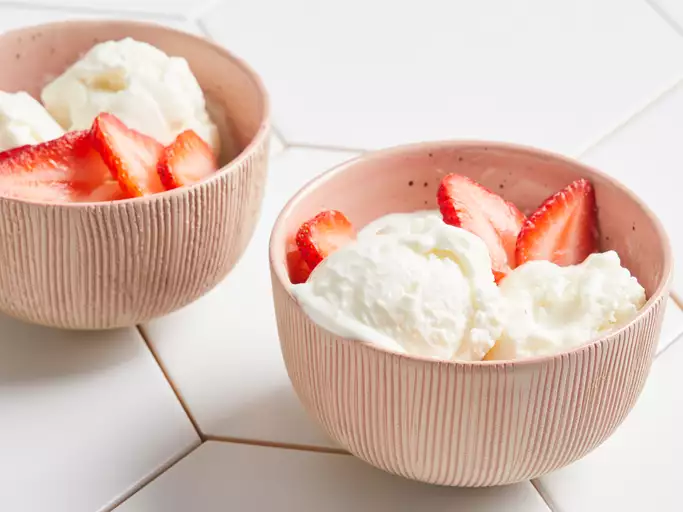

Home
Vanilla Frozen Yogurt

Description
This frozen yogurt recipe is so much easier than homemade ice cream. Just so you know, this freezes a lot quicker
than ice cream. Also, if you want tart frozen yogurt, feel free to decrease the sugar.
Ingredients
- 3 cups nonfat Greek yogurt
- ⅔ cup white sugar
- 1 teaspoon vanilla extract
Steps
- Stir together yogurt, sugar, and vanilla in a bowl until sugar is dissolved. Cover and refrigerate for 1
hour.
- Pour chilled mixture into an ice cream maker and freeze according to the manufacturer's directions until it
reaches "soft-serve" consistency.
- Transfer to a 1- or 2-quart plastic container with a lid; cover surface with plastic wrap and seal. Allow
frozen yogurt to ripen in the freezer for at least 2 hours or overnight.